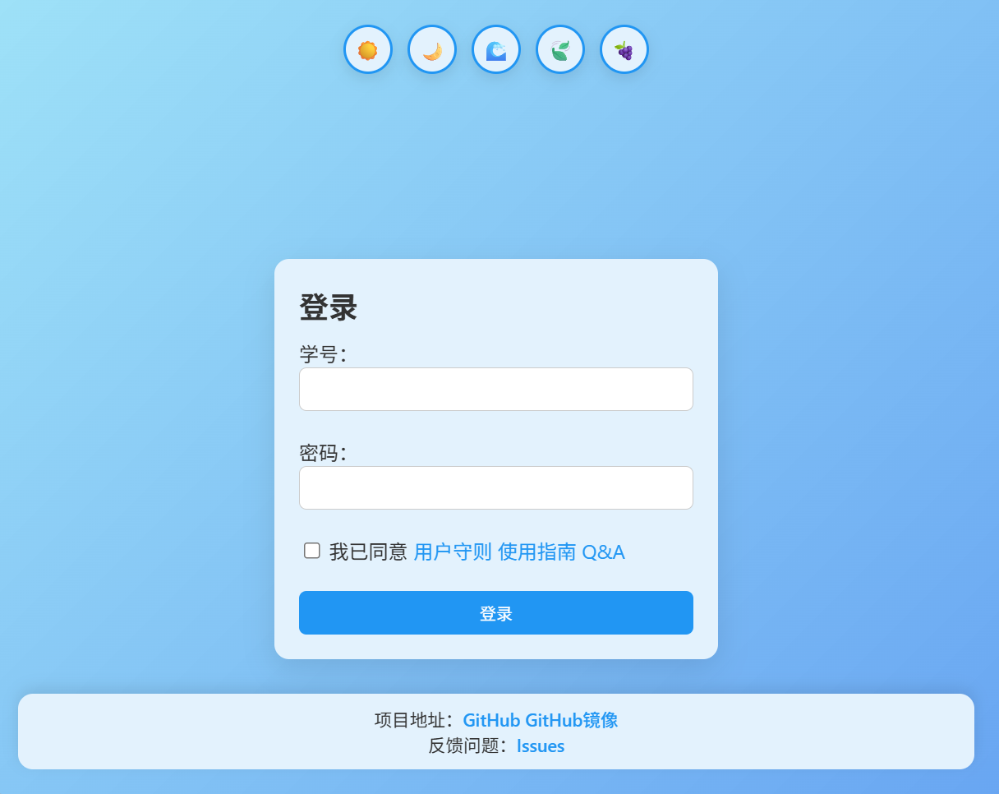
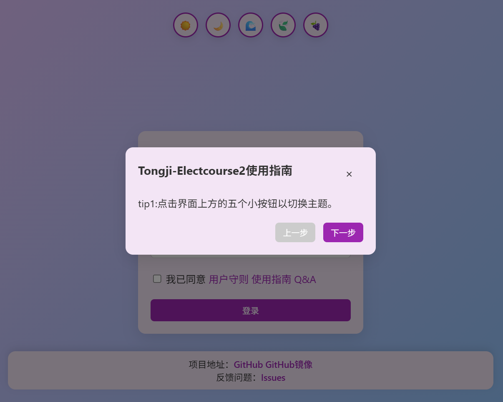
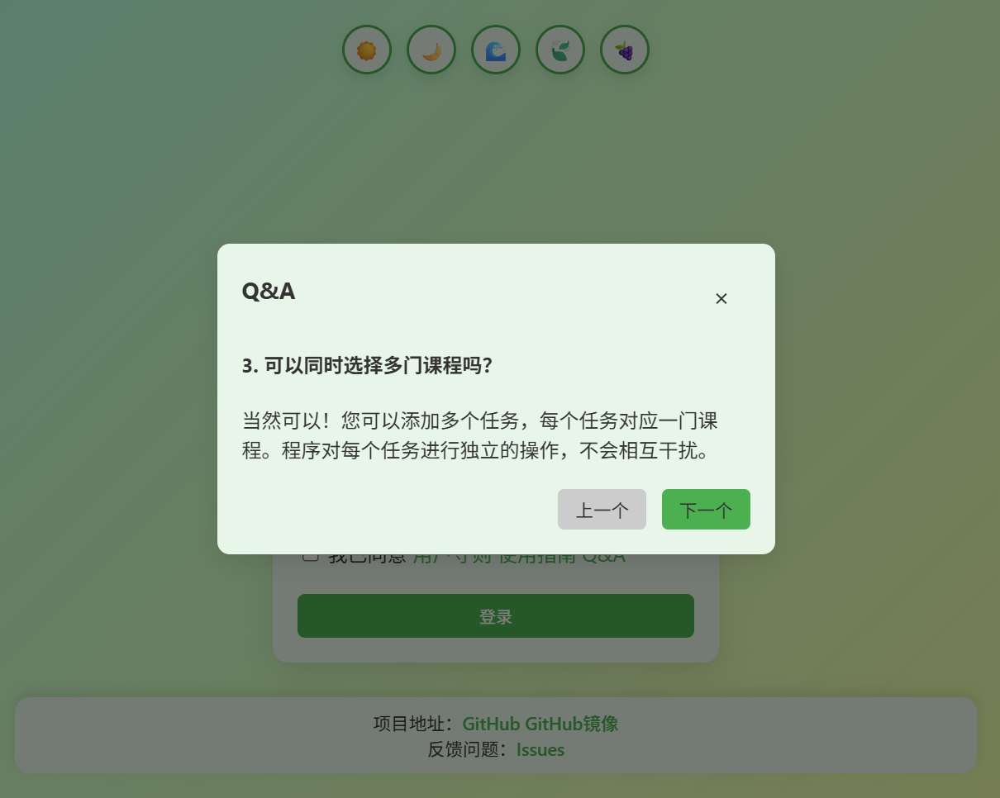
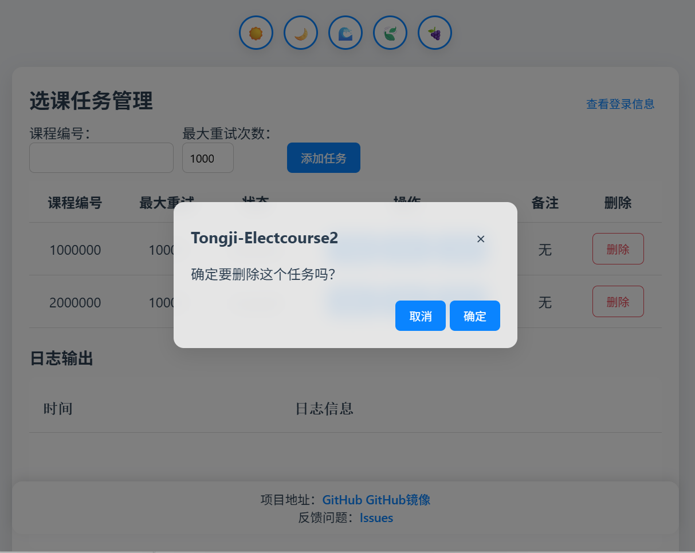
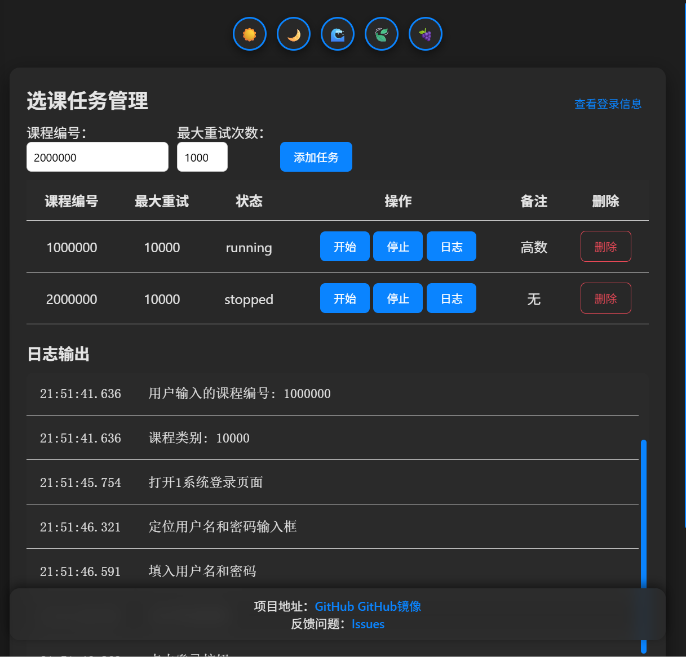

专为同济学子设计的可视化辅助选课工具，支持自动登录、循环重试与多线程并发，让选课更高效。
注：部分电脑上首次运行需初始化webdriver，需要第二次运行方可打开，属于正常现象
官方选课系统在高峰期常出现延迟甚至崩溃，热门课程分秒必争。传统手动刷新方式效率低且令人身心俱疲。
Tongji‑Electcourse2 结合自动化脚本与可视化界面，支持批量管理课程与智能循环重试，并通过日志实时反馈执行进度，帮助你轻松、透明地掌控选课进程。